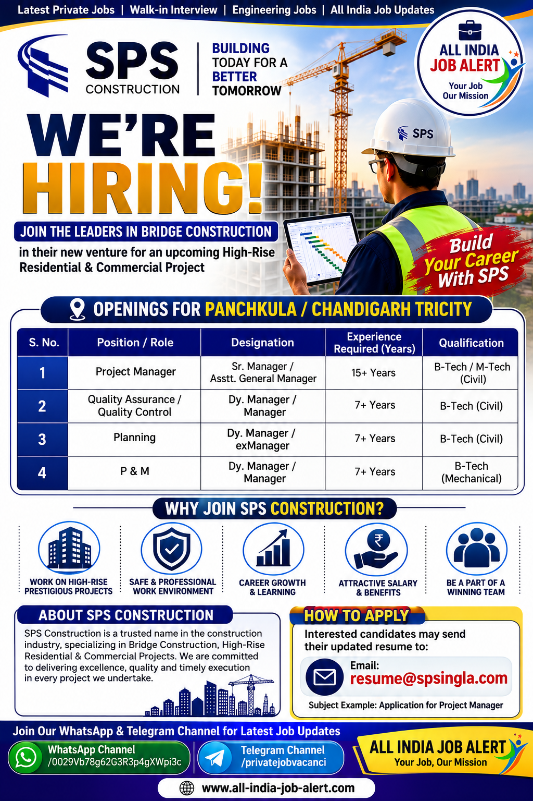

Company: SPS Construction
Job Type: Full Time
Industry: Civil Construction / High-Rise Residential & Commercial Projects
Experience: 7–15+ Years
Job Location: Panchkula / Chandigarh Tricity

SPS Construction has announced a new recruitment drive for experienced Civil Engineering professionals for its High-Rise Residential and Commercial Projects in Panchkula and Chandigarh Tricity. The company is inviting applications from qualified and experienced candidates for Project Management, QA/QC, Planning and Mechanical departments.
This recruitment offers an excellent opportunity for engineers who are looking to work with one of India's growing construction companies. Candidates with relevant project experience, technical expertise and leadership skills are encouraged to apply.
Candidates should possess B.Tech/M.Tech (Civil), B.Tech (Mechanical), or equivalent qualifications relevant to the applied position. Applicants must have experience in high-rise residential or commercial construction projects and strong technical knowledge in their respective fields.
Selected candidates will be responsible for project planning, site execution, quality control, project coordination, contractor management, documentation, scheduling, safety compliance and overall project monitoring. Project Managers will lead construction activities, QA/QC Engineers will ensure quality standards, Planning Engineers will manage project schedules, and P&M Engineers will supervise construction equipment and machinery.
Salary will be based on qualifications, experience and interview performance. SPS Construction offers attractive salary packages, career growth opportunities, professional learning, exposure to large infrastructure projects and other company benefits as per company policy.
Interested candidates may send their updated resume to the official recruitment email mentioned below. Candidates should clearly mention the position applied for in the email subject and include their latest resume, educational qualifications, work experience, current salary, expected salary, notice period and current location.
Email: resume@spsingla.com
Subject Example: Application for Project Manager
Candidates having relevant Civil or Mechanical Engineering qualifications and required experience can apply.
The vacancies are for Panchkula and Chandigarh Tricity projects.
Send your updated resume to resume@spsingla.com.
Only eligible candidates with relevant experience will be shortlisted. Ensure your resume contains updated educational qualifications, work experience and contact details before applying.
Join our WhatsApp and Telegram channels for the latest Private Jobs, Civil Jobs, Construction Jobs, Engineering Jobs and Walk-in Interview updates across India.
📲 Join WhatsApp Channel